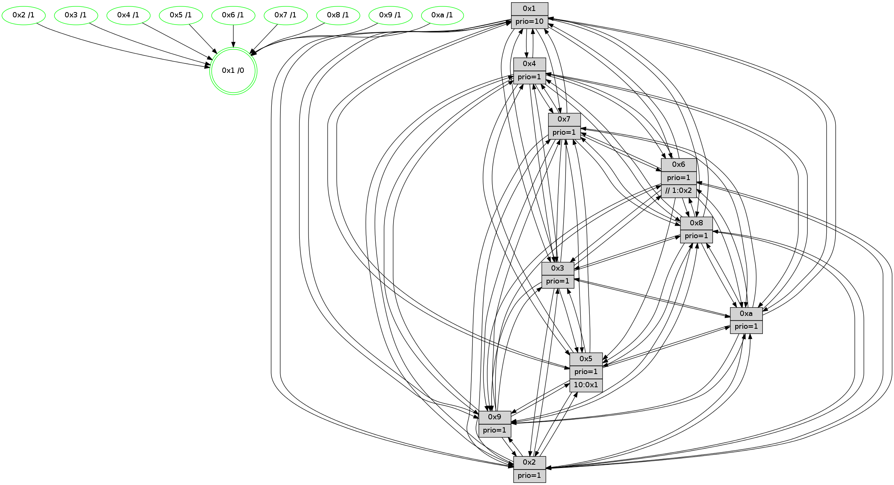

>> << IDX [start] -100 -25 -5 +0 +5 +25 +100 [1455.31837201]
 Previous packets
----------------------------------------------------------------------
1450.589583 beacon01(faad) #0 coord=01,02,03,04,05,06,07,0a,09,08 cycle=688.0ms assoc
-- color-indic=1 64 41 1f
1450.599565 beacon02(faad) #0 coord=01,02,03,04,05,06,07,0a,09,08 cycle=688.0ms assoc 64 d2 2e
1450.609565 beacon03(faad) #0 coord=01,02,03,04,05,06,07,0a,09,08 cycle=688.0ms assoc 64 a8 63
1450.619567 beacon04(faad) #0 coord=01,02,03,04,05,06,07,0a,09,08 cycle=688.0ms assoc 64 df 89
1450.629566 beacon05(faad) #0 coord=01,02,03,04,05,06,07,0a,09,08 cycle=688.0ms assoc 64 a5 c4
1450.639565 beacon06(faad) #0 coord=01,02,03,04,05,06,07,0a,09,08 cycle=688.0ms assoc 64 2b 13
1450.649567 beacon07(faad) #0 coord=01,02,03,04,05,06,07,0a,09,08 cycle=688.0ms assoc 64 51 5e
1450.659570 beacon0a(faad) #0 coord=01,02,03,04,05,06,07,0a,09,08 cycle=688.0ms assoc 64 20 55
1450.679572 beacon08(faad) #0 coord=01,02,03,04,05,06,07,0a,09,08 cycle=688.0ms assoc 64 d4 cf
1450.691788 [Hello(1): seq=834 sym=4,2,9,5,10,3,8,6,7 sysInfo=coloring-mode-on,ColoringModeRequestCalled stat=4:9,12,0,4/2:14,4,9,6/9:7,1,11,2/5:10,13,13,10/10:15,7,13,8/3:4,2,14,11/8:6,5,11,4/6:2,14,10,2/7:6,5,2,2]
1450.694516 [Hello(5): seq=925 sym=7,6,4,3,1,9,8,10,2 sysInfo=hasWarning stat=7:9,6,4,1/6:15,9,0,5/4:15,12,12,0/3:4,9,1,3/1:10,1,7,0/9:12,12,2,11/8:12,4,11,5/10:8,13,9,9/2:9,9,14,8]
1450.697029 [Color(9) seq=484 @0:0 prio=1]
1450.698512 [Hello(2): seq=921 sym=4,5,7,6,3,9,8,10,1 sysInfo=hasWarning stat=4:10,3,15,14/5:7,14,4,3/7:9,1,1,2/6:6,11,3,1/3:10,4,5,1/9:7,15,10,10/8:8,0,10,13/10:7,6,11,11/1:4,12,10,0]
1450.701210 [Hello(6): seq=925 sym=3,2,5,4,7,9,8,10,1 sysInfo=hasWarning stat=3:7,1,7,0/2:1,2,0,0/5:12,9,9,5/4:12,0,15,9/7:3,2,11,0/9:13,13,1,11/8:11,9,6,7/10:14,6,10,13/1:13,13,15,1]
1450.704665 [Color(2) seq=501 @0:0 prio=1]
1450.707582 [Color(10) seq=514 @0:0 prio=1]
1450.709280 [Color(6) seq=557 @0:0 prio=1 >>1.@2,1.@3,1.@4]
1450.712343 [Color(5) seq=461 @0:0 prio=1 >10.@1,1.@2,1.@3,1.@4]
1450.714921 [Hello(3): seq=925 sym=1,7,6,2,4,8,9,10,5 sysInfo=hasWarning stat=1:10,7,3,0/7:9,15,3,15/6:4,5,8,3/2:1,2,0,0/4:1,8,6,14/8:2,0,11,6/9:7,13,13,1/10:5,7,3,5/5:14,5,2,2]
1450.719040 [Color(3) seq=554 @0:0 prio=1]
----------------------------------------------------------------------
1451.377714 beacon01(faad) #0 coord=01,02,03,04,05,06,07,0a,09,08 cycle=688.0ms assoc
-- color-indic=1 64 fd 1a
1451.387697 beacon02(faad) #0 coord=01,02,03,04,05,06,07,0a,09,08 cycle=688.0ms assoc 64 6e 2b
1451.397698 beacon03(faad) #0 coord=01,02,03,04,05,06,07,0a,09,08 cycle=688.0ms assoc 64 14 66
1451.407698 beacon04(faad) #0 coord=01,02,03,04,05,06,07,0a,09,08 cycle=688.0ms assoc 64 63 8c
1451.417699 beacon05(faad) #0 coord=01,02,03,04,05,06,07,0a,09,08 cycle=688.0ms assoc 64 19 c1
1451.427697 beacon06(faad) #0 coord=01,02,03,04,05,06,07,0a,09,08 cycle=688.0ms assoc 64 97 16
1451.437698 beacon07(faad) #0 coord=01,02,03,04,05,06,07,0a,09,08 cycle=688.0ms assoc 64 ed 5b
1451.447703 beacon0a(faad) #0 coord=01,02,03,04,05,06,07,0a,09,08 cycle=688.0ms assoc 64 9c 50
1451.457703 beacon09(faad) #0 coord=01,02,03,04,05,06,07,0a,09,08 cycle=688.0ms assoc 64 12 87
1451.467703 beacon08(faad) #0 coord=01,02,03,04,05,06,07,0a,09,08 cycle=688.0ms assoc 64 68 ca
1451.479562 [Hello(10): seq=858 sym=6,2,3,8,7,5,9,4,1 sysInfo=hasWarning stat=6:15,4,6,5/2:11,14,9,1/3:1,14,0,15/8:6,15,7,4/7:14,6,5,10/5:7,1,2,2/9:13,0,6,1/4:3,14,2,3/1:14,9,12,1]
1451.483393 [STC(1) #0.253 tree-change,inconsistent-stability,stable,to-color d=0]
1451.484823 [Hello(7): seq=925 sym=2,3,5,6,4,8,9,10,1 sysInfo=hasWarning stat=2:6,7,14,5/3:14,14,1,4/5:13,0,1,4/6:14,11,14,12/4:13,0,12,2/8:8,15,3,0/9:8,13,13,2/10:11,12,6,7/1:4,6,11,0]
1451.490420 [Color(1) seq=605 @0:0 prio=10]
1451.492022 [Color(8) seq=524 @0:0 prio=1]
1451.494005 [Color(7) seq=453 @0:0 prio=1]
1451.495418 [Hello(4): seq=925 sym=5,8,6,2,3,9,7,10,1 sysInfo= stat=5:8,15,13,3/8:1,4,2,0/6:1,8,7,1/2:13,9,15,2/3:15,4,8,15/9:3,13,3,2/7:1,2,0,0/10:7,4,8,14/1:6,11,0,1]
1451.498236 [Color(4) seq=464 @0:0 prio=1]
----------------------------------------------------------------------
1452.165848 beacon01(faad) #0 coord=01,02,03,04,05,06,07,0a,09,08 cycle=688.0ms assoc
-- color-indic=1 64 c9 02
1452.175830 beacon02(faad) #0 coord=01,02,03,04,05,06,07,0a,09,08 cycle=688.0ms assoc 64 5a 33
1452.185831 beacon03(faad) #0 coord=01,02,03,04,05,06,07,0a,09,08 cycle=688.0ms assoc 64 20 7e
1452.195831 beacon04(faad) #0 coord=01,02,03,04,05,06,07,0a,09,08 cycle=688.0ms assoc 64 57 94
1452.205831 beacon05(faad) #0 coord=01,02,03,04,05,06,07,0a,09,08 cycle=688.0ms assoc 64 2d d9
1452.215831 beacon06(faad) #0 coord=01,02,03,04,05,06,07,0a,09,08 cycle=688.0ms assoc 64 a3 0e
1452.225831 beacon07(faad) #0 coord=01,02,03,04,05,06,07,0a,09,08 cycle=688.0ms assoc 64 d9 43
1452.235835 beacon0a(faad) #0 coord=01,02,03,04,05,06,07,0a,09,08 cycle=688.0ms assoc 64 a8 48
1452.255840 beacon08(faad) #0 coord=01,02,03,04,05,06,07,0a,09,08 cycle=688.0ms assoc 64 5c d2
1452.266768 [Hello(1): seq=835 sym=4,2,9,5,10,3,8,6,7 sysInfo=coloring-mode-on,ColoringModeRequestCalled stat=4:10,13,0,4/2:15,5,9,6/9:7,2,11,2/5:11,14,13,10/10:0,8,13,8/3:5,3,14,11/8:6,6,11,4/6:3,15,10,2/7:6,6,2,2]
1452.270966 [Color(9) seq=485 @0:0 prio=1]
1452.277346 [Hello(6): seq=926 sym=3,2,5,4,7,9,8,10,1 sysInfo=hasWarning stat=3:8,2,7,0/2:1,2,0,0/5:13,10,9,5/4:13,1,15,9/7:4,3,11,0/9:13,13,1,11/8:12,10,6,7/10:15,6,10,13/1:14,14,0,1]
1452.280710 [Hello(5): seq=926 sym=7,4,3,1,9,8,10,2 sysInfo=hasWarning stat=7:10,7,4,1/4:0,13,12,0/3:5,10,1,3/1:11,2,8,0/9:13,12,2,11/8:12,5,11,5/10:9,13,9,9/2:9,9,14,8]
1452.283713 [STC(2)->1 #0.253 tree-change,inconsistent-stability,stable,to-color d=1]
1452.285361 [Color(2) seq=502 @0:0 prio=1]
1452.287623 [STC(6)->1 #0.253 tree-change,inconsistent-stability,stable,to-color d=1]
1452.290535 [STC(3)->1 #0.253 tree-change,inconsistent-stability,stable,to-color d=1]
1452.293086 [STC(5)->1 #0.253 tree-change,inconsistent-stability,stable,to-color d=1]
1452.294726 [STC(10)->1 #0.253 tree-change,inconsistent-stability,stable,to-color d=1]
1452.296607 [Color(5) seq=462 @0:0 prio=1 >10.@1,1.@2,1.@3,1.@4]
1452.299362 [Color(10) seq=515 @0:0 prio=1]
1452.308129 [Color(3) seq=555 @0:0 prio=1]
----------------------------------------------------------------------
1452.953977 beacon01(faad) #0 coord=01,02,03,04,05,06,07,0a,09,08 cycle=688.0ms assoc
-- color-indic=1 64 75 07
1452.963959 beacon02(faad) #0 coord=01,02,03,04,05,06,07,0a,09,08 cycle=688.0ms assoc 64 e6 36
1452.973960 beacon03(faad) #0 coord=01,02,03,04,05,06,07,0a,09,08 cycle=688.0ms assoc 64 9c 7b
1452.983961 beacon04(faad) #0 coord=01,02,03,04,05,06,07,0a,09,08 cycle=688.0ms assoc 64 eb 91
1452.993960 beacon05(faad) #0 coord=01,02,03,04,05,06,07,0a,09,08 cycle=688.0ms assoc 64 91 dc
1453.003960 beacon06(faad) #0 coord=01,02,03,04,05,06,07,0a,09,08 cycle=688.0ms assoc 64 1f 0b
1453.013961 beacon07(faad) #0 coord=01,02,03,04,05,06,07,0a,09,08 cycle=688.0ms assoc 64 65 46
1453.023964 beacon0a(faad) #0 coord=01,02,03,04,05,06,07,0a,09,08 cycle=688.0ms assoc 64 14 4d
1453.043967 beacon08(faad) #0 coord=01,02,03,04,05,06,07,0a,09,08 cycle=688.0ms assoc 64 e0 d7
1453.056498 [Hello(9): seq=870 sym=2,5,3,4,7,6,8,1 sysInfo=hasWarning stat=2:3,13,6,12/5:4,3,6,9/3:14,0,2,5/4:12,11,14,3/7:11,4,13,5/6:1,1,4,0/8:10,4,13,7/1:15,8,15,1]
1453.058842 [Hello(10): seq=859 sym=6,2,3,8,7,5,9,4,1 sysInfo=hasWarning stat=6:15,4,6,5/2:11,14,9,1/3:1,15,0,15/8:7,0,7,4/7:15,7,5,10/5:7,1,2,2/9:13,0,6,1/4:4,15,2,3/1:15,10,13,1]
1453.061316 [Color(1) seq=606 @0:0 prio=10]
1453.062514 [Hello(4): seq=926 sym=5,8,6,2,3,9,7,10,1 sysInfo= stat=5:9,0,14,3/8:1,4,2,0/6:2,9,8,1/2:14,10,0,2/3:15,5,8,15/9:3,14,3,2/7:1,2,0,0/10:8,5,9,14/1:7,11,0,1]
1453.066169 [Hello(8): seq=870 sym=5,2,3,7,9,6,4,10,1 sysInfo=hasWarning stat=5:10,4,12,2/2:1,2,6,13/3:11,3,11,4/7:1,5,0,0/9:2,5,13,5/6:2,2,6,0/4:1,1,6,2/10:6,5,4,5/1:13,1,0,0]
1453.069014 [Color(8) seq=525 @0:0 prio=1]
1453.075903 [Hello(7): seq=926 sym=2,3,5,6,4,8,9,10,1 sysInfo=hasWarning stat=2:6,8,15,5/3:14,15,1,4/5:14,1,2,4/6:15,12,15,12/4:14,1,12,2/8:8,15,3,0/9:8,14,13,2/10:12,13,7,7/1:5,6,11,0]
1453.080948 [Color(7) seq=454 @0:0 prio=1]
----------------------------------------------------------------------
1453.742111 beacon01(faad) #0 coord=01,02,03,04,05,06,07,0a,09,08 cycle=688.0ms assoc
-- color-indic=1 64 b1 09
1453.752093 beacon02(faad) #0 coord=01,02,03,04,05,06,07,0a,09,08 cycle=688.0ms assoc 64 22 38
1453.762094 beacon03(faad) #0 coord=01,02,03,04,05,06,07,0a,09,08 cycle=688.0ms assoc 64 58 75
1453.772093 beacon04(faad) #0 coord=01,02,03,04,05,06,07,0a,09,08 cycle=688.0ms assoc 64 2f 9f
1453.782093 beacon05(faad) #0 coord=01,02,03,04,05,06,07,0a,09,08 cycle=688.0ms assoc 64 55 d2
1453.792093 beacon06(faad) #0 coord=01,02,03,04,05,06,07,0a,09,08 cycle=688.0ms assoc 64 db 05
1453.802094 beacon07(faad) #0 coord=01,02,03,04,05,06,07,0a,09,08 cycle=688.0ms assoc 64 a1 48
1453.812099 beacon0a(faad) #0 coord=01,02,03,04,05,06,07,0a,09,08 cycle=688.0ms assoc 64 d0 43
1453.832099 beacon08(faad) #0 coord=01,02,03,04,05,06,07,0a,09,08 cycle=688.0ms assoc 64 24 d9
1453.844630 [Hello(1): seq=836 sym=4,2,9,5,10,3,8,6,7 sysInfo=coloring-mode-on,ColoringModeRequestCalled stat=4:11,13,0,4/2:15,6,10,6/9:8,3,11,2/5:12,15,14,10/10:0,9,14,8/3:6,4,15,11/8:7,7,11,4/6:4,15,11,2/7:7,7,2,2]
1453.847668 [Color(9) seq=486 @0:0 prio=1]
1453.848958 [Color(10) seq=516 @0:0 prio=1]
1453.851427 [Hello(3): seq=927 sym=1,7,6,2,4,8,9,10,5 sysInfo=hasWarning stat=1:12,9,4,0/7:11,1,3,15/6:4,5,8,3/2:1,2,0,0/4:3,9,6,14/8:4,2,11,6/9:8,14,13,1/10:7,7,3,5/5:15,5,2,2]
1453.854256 [Color(3) seq=556 @0:0 prio=1]
1453.859251 [Hello(2): seq=923 sym=4,5,7,6,3,9,8,10,1 sysInfo=hasWarning stat=4:12,4,15,14/5:8,0,5,3/7:11,3,1,2/6:6,12,4,1/3:11,6,5,1/9:9,0,10,10/8:9,2,10,13/10:9,8,12,11/1:6,14,11,0]
1453.861830 [Hello(6): seq=927 sym=3,2,5,4,7,9,8,10,1 sysInfo=hasWarning stat=3:8,3,7,0/2:1,2,0,0/5:13,11,10,5/4:14,1,15,9/7:5,4,11,0/9:14,14,1,11/8:13,11,6,7/10:0,7,11,13/1:15,15,0,1]
1453.864456 [Color(2) seq=503 @0:0 prio=1]
1453.866271 [Color(6) seq=559 @0:0 prio=1 >>1.@2,1.@3,1.@4]
1453.870334 [Hello(5): seq=927 sym=7,4,3,1,9,8,10,2 sysInfo=hasWarning stat=7:10,8,4,1/4:1,13,12,0/3:5,11,1,3/1:12,3,8,0/9:14,12,2,11/8:13,6,11,5/10:10,14,9,9/2:9,9,14,8]
1453.873328 [Color(5) seq=463 @0:0 prio=1 >10.@1,1.@2,1.@3,1.@4]
----------------------------------------------------------------------
1454.530241 beacon01(faad) #0 coord=01,02,03,04,05,06,07,0a,09,08 cycle=688.0ms assoc
-- color-indic=1 64 0d 0c
1454.540224 beacon02(faad) #0 coord=01,02,03,04,05,06,07,0a,09,08 cycle=688.0ms assoc 64 9e 3d
1454.550223 beacon03(faad) #0 coord=01,02,03,04,05,06,07,0a,09,08 cycle=688.0ms assoc 64 e4 70
1454.560223 beacon04(faad) #0 coord=01,02,03,04,05,06,07,0a,09,08 cycle=688.0ms assoc 64 93 9a
1454.570223 beacon05(faad) #0 coord=01,02,03,04,05,06,07,0a,09,08 cycle=688.0ms assoc 64 e9 d7
1454.580225 beacon06(faad) #0 coord=01,02,03,04,05,06,07,0a,09,08 cycle=688.0ms assoc 64 67 00
1454.590225 beacon07(faad) #0 coord=01,02,03,04,05,06,07,0a,09,08 cycle=688.0ms assoc 64 1d 4d
1454.600230 beacon0a(faad) #0 coord=01,02,03,04,05,06,07,0a,09,08 cycle=688.0ms assoc 64 6c 46
1454.620229 beacon08(faad) #0 coord=01,02,03,04,05,06,07,0a,09,08 cycle=688.0ms assoc 64 98 dc
1454.632733 [Hello(9): seq=871 sym=2,5,3,4,7,6,8,10,1 sysInfo=hasWarning stat=2:4,14,6,12/5:5,4,6,9/3:15,1,2,5/4:13,12,14,3/7:11,5,13,5/6:2,2,4,0/8:11,5,13,7/10:0,1,0,0/1:0,9,15,1]
1454.635766 [Color(1) seq=607 @0:0 prio=10]
1454.637012 [Hello(10): seq=860 sym=6,2,3,8,7,5,9,4,1 sysInfo=hasWarning stat=6:0,5,6,5/2:12,15,9,1/3:2,0,0,15/8:8,1,7,4/7:0,8,5,10/5:8,2,2,2/9:13,0,6,1/4:5,15,2,3/1:0,11,13,1]
1454.639773 [Hello(8): seq=871 sym=5,2,3,7,9,6,4,10,1 sysInfo=hasWarning stat=5:11,5,12,2/2:2,3,6,13/3:12,4,11,4/7:2,6,0,0/9:3,6,13,5/6:3,3,6,0/4:1,1,6,2/10:7,6,4,5/1:14,1,0,0]
1454.644840 [Color(8) seq=526 @0:0 prio=1]
1454.646693 [Hello(4): seq=927 sym=5,8,6,2,3,9,7,10,1 sysInfo= stat=5:10,1,14,3/8:1,4,2,0/6:3,10,8,1/2:15,11,0,2/3:0,6,8,15/9:4,15,3,2/7:1,3,0,0/10:9,6,9,14/1:8,11,0,1]
1454.649849 [Color(4) seq=466 @0:0 prio=1]
1454.653566 [Color(7) seq=455 @0:0 prio=1]